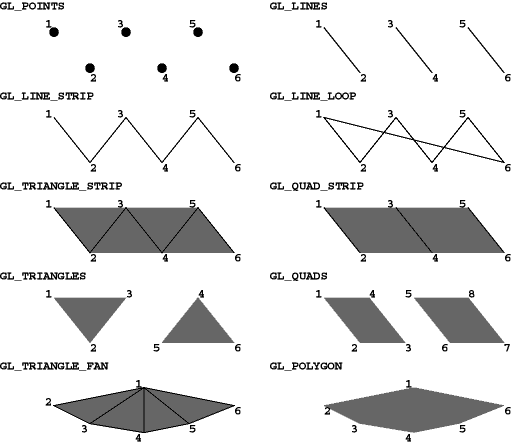
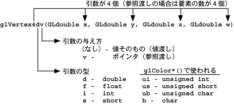
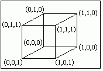

この文書の位置づけ
この文書は経済学部学部生及びゼミ生向けの OpenGLの入門テキストです。 内容は不十分なので、 必要に応じてオンラインマニュアル等を参照してください。 また間違いも含んでいます。 コメントをお願いします。 PDF形式 (100KB)もあります。
（この文書は GLUTによる「手抜き」OpenGL入門 に置き換えました）
目次
１．はじめに
２．AUXライブラリを使えるようにする
３．ウィンドウを開く
４．図形を描く
５．ウィンドウマネージャとのインタフェース
６．マウス
７．３次元表示
８．アニメーション
９．隠面消去
１０．陰影付け
１１．階層構造
AUX ライブラリは学習用という位置づけなので、 機能はあまり充実しているとは言えません。 AUX ライブラリをベースに実用に耐えるよう機能強化したものに GLUT (libglut.a) があります。 GLUTを使った入門 もそのうち書くつもりです。
AUX ライブラリ、GLUT のいずれも UNIX/Windows のいずれでも動きます。 ソースコードに多少工夫をすれば、 どちらでもコンパイルできるプログラムを作ることができます。
２．AUXライブラリを使えるようにする
まず、AUX ライブラリを使えるようにします。
適当なところに OpenGL というディレクトリを作り、そこに移動してください。
そのディレクトリにファイルをコピーします。
libtk に移って、ライブラリをコンパイルします。
% cp -r /usr/share/src/OpenGL/toolkits/{libaux,libtk} .
libaux に移って、ライブラリをコンパイルします。
もとのディレクトリに戻ります。
これで libaux.a の 32bit 版、新 32bit (n32) 版、 64bit 版の３つのライブラリができます。 とりあえずこの 32bit 版だけを使うことにします。
AUX ライブラリの方は VC++ などの処理系には最初から入っていると思います。 以降のサンプルプログラムを Windows NT/95 で試す場合は、 プロジェクトを新規作成する際に Win32 Console Application とし （もちろんここでプロジェクト名も指定してください）、 プロジェクトの設定において、 glaux.lib glu32.lib opengl32.lib の３つのライブラリファイル （シリコングラフィックス版の場合は glaux.lib glu.lib opengl.lib）を リンクしてください。
なお、
Delphi で OpenGL を使う場合のレポートを
中山礼児君が
書いてくれています。サンプルプログラムもあります。
３．ウィンドウを開く
最初にウィンドウを開くだけのプログラムを作ってみます。
このプログラムのソースファイル名は glprog1.c とします。
これをコンパイルします。
#ifdef unix # include <GL/gl.h> # include "aux.h" # define CALLBACK #else # include <windows.h> # include <GL/gl.h> # include <GL/glaux.h> #endif int main(int argc, char *argv[]) { auxInitWindow(argv[0]); return 0; }
できた a.out を実行してみます。
何も表示しないか、一瞬何か表示してすぐにプログラムが終わってしまうと思います。 すぐにプログラムが終わってしまうのも何なので、 終わるまでの間に１０秒ほど眠ってもらいましょう。 網掛の部分を追加して、 もう一度コンパイルして実行してみてください。
今度は何か表示されたんじゃないかと思います。 auxInitWindow(string) は、単に新しいウィンドウを開きます。 引数の string がウィンドウのタイトルバーに表示されます。 glprog1.c では argv[0] を表示しているので、 コマンド名の a.out が表示されると思います。
#ifdef unix # include <GL/gl.h> # include "aux.h" # define CALLBACK #else # include <windows.h> # include <GL/gl.h> # include <GL/glaux.h> #endif int main(int argc, char *argv[]) { auxInitWindow(argv[0]); sleep(10); return 0; }
ウィンドウ内を塗りつぶしてみます。 glprog1.c に太字の部分を追加してください。
glClearColor(), glClear(), glFlush() は OpenGL オリジナルの関数です。
#ifdef unix # include <GL/gl.h> # include "aux.h" # define CALLBACK #else # include <windows.h> # include <GL/gl.h> # include <GL/glaux.h> #endif int main(int argc, char *argv[]) { auxInitWindow(argv[0]); glClearColor(1.0, 1.0, 1.0, 0.0); glClear(GL_COLOR_BUFFER_BIT); glFlush(); sleep(10); return 0; }
glClearColor() は glClear() でウィンドウを塗りつぶす色を指定します。 引数は左から赤、緑、青、それにα値で、 それぞれ０〜１の間の値を取ります。 このプログラムでは赤、緑、青はそれぞれ 1.0 なので、 合成されてウィンドウ内が白色で塗りつぶされると思います。 これらの値を変更して、 いろんな色でウィンドウを塗りつぶしてみてください。 なお、α値は、ここでは「透明度」だと思ってください。 これはとりあえず 0.0 にしておいてください。
glClear() はウィンドウの塗りつぶし（画面の消去）を実行します。 OpenGL が取り扱う画面は、色を格納する「カラーバッファ」以外に、 隠れ面消去に使う「Ｚバッファ」や マスク処理などに使う「ステンシルバッファ」など、 いくつかのものがあります。 ここでは色を塗りつぶすだけなので COLOR_BUFFER_BIT を指定します。
glFlush() はまだ実行されていない OpenGL の命令を全部実行します。 OpenGL では、関数呼び出しによって生成される OpenGL の命令を その都度実行するのではなく、 いくつか溜め込んでおいてまとめて実行します。 このため、ある程度命令が溜まらないと、 関数を呼び出しても実行が開始されない場合があります。 glFlush() はそういう状況で まだ実行されていない残りの命令の実行を開始します。 この関数は必須ではありませんし、 ひんぱんに glFlush() を呼び出すと、かえって描画速度が低下します。
４．図形を描く
ウィンドウ内に線を引いてみます。
ウィンドウの背景は黒色にします。
glprog1.c を次のように変更してください。
図形を描くには、 glBegin()〜glEnd() の間に、 その図形の各頂点の座標値を設定する関数を置きます。
#ifdef unix # include <GL/gl.h> # include "aux.h" # define CALLBACK #else # include <windows.h> # include <GL/gl.h> # include <GL/glaux.h> #endif int main(int argc, char *argv[]) { auxInitWindow(argv[0]); glClearColor(0.0, 0.0, 0.0, 0.0); glClear(GL_COLOR_BUFFER_BIT); glBegin(GL_LINE_LOOP); glVertex2d(0.1, 0.1); glVertex2d(0.9, 0.1); glVertex2d(0.9, 0.9); glVertex2d(0.1, 0.9); glEnd(); glFlush(); sleep(10); return 0; }
glVertex2d() は２次元の座標値を設定するのに使います。 引数の型は double です。 引数が float 型のときは glVertex2f() を使います。
glBegin() の引数には、 描画する図形のタイプを指定します。 詳しくは man glBegin を読んでください。
OpenGL を処理するハードウェアは、 実際には３角形しか塗り潰すことができません （モノによっては４角形もできるものもあります）。 このため GL_POLYGON の場合は、 多角形を３角形に分割してから処理します。 従って、もし描画速度が重要なら、 GL_TRIANGLE_STRIP や GL_TRIANGLE_FAN を使うよう プログラムを工夫してみてください。 また GL_QUADS も GL_POLYGON より高速です。
- GL_POINTS
- 点を打ちます。
- GL_LINES
- ２点を対にして、その間を直線で結びます。
- GL_LINE_STRIP
- 折れ線を描きます。
- GL_LINE_LOOP
- 折れ線を描きます。始点と終点の間も結ばれます。
- GL_TRIANGLES / GL_QUADS
- ３／４点を組にして、三角形／四角形を描きます。
- GL_TRIANGLE_STRIP / GL_QUAD_STRIP
- 一辺を共有しながら帯状に三角形／四角形を描きます。
- GL_TRIANGLE_FAN
- 一辺を共有しながら扇状に三角形を描きます。
- GL_POLYGON
- 凸多角形を描きます。
線に色を付けてみます。glprog1.c を次のように修正します。
auxInitDisplayMode() は、画面の表示モードを設定します。 引数の AUX_RGBA は画面を RGBA モードで使用することを意味し、 描画の際の色の指定を RGB（赤、緑、青）で行うことができます。
#ifdef unix # include <GL/gl.h> # include "aux.h" # define CALLBACK #else # include <windows.h> # include <GL/gl.h> # include <GL/glaux.h> #endif int main(int argc, char *argv[]) { auxInitDisplayMode(AUX_RGBA); auxInitWindow(argv[0]); glClearColor(0.0, 0.0, 0.0, 0.0); glClear(GL_COLOR_BUFFER_BIT); glColor3d(1.0, 0.0, 0.0); glBegin(GL_LINE_LOOP); glVertex2d(0.1, 0.1); glVertex2d(0.9, 0.1); glVertex2d(0.9, 0.9); glVertex2d(0.1, 0.9); glEnd(); glFlush(); sleep(10); return 0; }
glColor3d() は、これから描画するものの色を、 ３つの実数値 (double) で指定します。 引数は左から赤、緑、青で、それぞれ０〜１の値を指定します。 引数が float 型の時は glColor3f() を使います。
図形を塗りつぶしてみます。 glprog1.c を次のように修正してください。
色は頂点毎に指定することもできます。 glprog1.c を次のように修正してください。
#ifdef unix # include <GL/gl.h> # include "aux.h" # define CALLBACK #else # include <windows.h> # include <GL/gl.h> # include <GL/glaux.h> #endif int main(int argc, char *argv[]) { auxInitDisplayMode(AUX_RGBA); auxInitWindow(argv[0]); glClearColor(0.0, 0.0, 0.0, 0.0); glClear(GL_COLOR_BUFFER_BIT); glColor3d(1.0, 0.0, 0.0); glBegin(GL_QUADS); glVertex2d(0.1, 0.1); glVertex2d(0.9, 0.1); glVertex2d(0.9, 0.9); glVertex2d(0.1, 0.9); glEnd(); glFlush(); sleep(10); return 0; }
この場合、多角形の内部は頂点の色から補間した色で塗りつぶされます。
#ifdef unix # include <GL/gl.h> # include "aux.h" # define CALLBACK #else # include <windows.h> # include <GL/gl.h> # include <GL/glaux.h> #endif int main(int argc, char *argv[]) { auxInitDisplayMode(AUX_RGBA); auxInitWindow(argv[0]); glClearColor(0.0, 0.0, 0.0, 0.0); glClear(GL_COLOR_BUFFER_BIT); glBegin(GL_QUADS); glColor3d(1.0, 0.0, 0.0); glVertex2d(0.1, 0.1); glColor3d(0.0, 1.0, 0.0); glVertex2d(0.9, 0.1); glColor3d(0.0, 0.0, 1.0); glVertex2d(0.9, 0.9); glColor3d(1.0, 0.0, 1.0); glVertex2d(0.1, 0.9); glEnd(); glFlush(); sleep(10); return 0; }
glVertex*() や glColor*() のような関数の * の部分は、 引数の型や数などを示しています。 詳しくは man glVertex2d や man glColor3d を読んでください。

この理由は a.out が表示中は sleep(10) によって休止しているからです。 マルチウィンドウ環境下では、 このようにウィンドウが他のウィンドウによって隠されたりすることがありますから、 そのウィンドウを再び表示するためには、 その内容を描き直す必要があります。
AUX ライブラリは、 表示しているウィンドウに対して何らかの操作が加えられたとき、 それを検知して必要な関数を呼び出すということができます。
まず、これまでのプログラムにおいて、 実際に描画処理を行う部分を抜き出して、 独立した関数にします。 この関数を draw() とします。 CALLBACK は Windows の AUX ライブラリを使用するときに指定します。
main() において、auxMainLoop() の引数として、 実際に描画を行う関数のポインタ（この場合は draw）を指定します。 auxMainLoop() は描画処理が必要になる度にこの関数を呼び出します。
もう一つ、ウィンドウのサイズが変更されたときに、 それに応じて座標変換のパラメータも設定しなおす必要があります。 ウィンドウのサイズが変更されたときには、 auxReshapeFunc() の引数で指定された関数を、 サイズ変更後のウィンドウの高さと幅を引数にして呼び出します。 ここでは resize() という関数を定義して、 座標変換のパラメータを初期化します。 glLoadIdentity() は座標変換用の行列に単位行列を設定します。
以上をもとにプログラムに修正を加えると、 下のようになります。 glprog1.c を次のように修正してください。
auxMainLoop() は無限ループですが、 キーボードの ESC キーが押されたら終了するようになっています。
#ifdef unix # include <GL/gl.h> # include "aux.h" # define CALLBACK #else # include <windows.h> # include <GL/gl.h> # include <GL/glaux.h> #endif GLvoid CALLBACK draw(void) { glClearColor(0.0, 0.0, 0.0, 0.0); glClear(GL_COLOR_BUFFER_BIT); glBegin(GL_QUADS); glColor3d(1.0, 0.0, 0.0); glVertex2d(0.1, 0.1); glColor3d(0.0, 1.0, 0.0); glVertex2d(0.9, 0.1); glColor3d(0.0, 0.0, 1.0); glVertex2d(0.9, 0.9); glColor3d(1.0, 0.0, 1.0); glVertex2d(0.1, 0.9); glEnd(); glFlush(); } GLvoid CALLBACK resize(GLsizei w, GLsizei h) { glLoadIdentity(); } int main(int argc, char *argv[]) { auxInitDisplayMode(AUX_RGBA); auxInitWindow(argv[0]); auxReshapeFunc(resize); auxMainLoop(draw); return 0; }
このウィンドウの位置やサイズを変更してみてください。
ウィンドウの大きさにあわせて、 ウィンドウ内に表示されているものの大きさを変えるようにします。 glprog1.c を次のように修正してください。
glViewPort() はウィンドウ内のどの部分に表示するかを指定します。 引数は左からビューポート（表示領域）の左下隅のＸ座標およびＹ座標、 それにビューポートの幅と高さを画素数で指定します。 新たに開かれたりサイズが変更された後のウィンドウの幅や高さは resize() の引数 w および h に渡されるので、 glViewport(0, 0, w, h) は開いたウィンドウの全面を表示領域に使います。
#ifdef unix # include <GL/gl.h> # include "aux.h" # define CALLBACK #else # include <windows.h> # include <GL/gl.h> # include <GL/glaux.h> #endif GLvoid CALLBACK draw(void) { /* 省略 */ } GLvoid CALLBACK resize(GLsizei w, GLsizei h) { glLoadIdentity(); glViewport(0, 0, w, h); glOrtho(-1.0, 1.0, -1.0, 1.0, 0.0, 1.0); } int main(int argc, char *argv[]) { auxInitDisplayMode(AUX_RGBA); auxInitWindow(argv[0]); auxReshapeFunc(resize); auxMainLoop(draw); return 0; }
glOrtho() は座標軸を指定します。 引数は左から表示領域の左端の座標値、 右端の座標値、下端の座標値、上端の座標値、前方面の座標値、 後方面の座標値です。 したがって、開いたウィンドウの左下隅の座標は (-1.0, -1.0)、 右上隅は (1.0, 1.0) となり、中央に原点 (0, 0) があります。 なお、今は２次元の話ですが、 内部的には奥行き（Ｚ）方向を 0 として処理しているので、 一応手前（前方面）を 0.0、奥（後方面）を 1.0 にしています。
あらかじめ指定したサイズでウィンドウを開くには、 auxInitWindow() でウィンドウを開く前に auxInitPosition() を使って指定します。 glprog1.c を次のように修正します。
この例では画面上の左端から 200 画素、上から 100 画素の位置に、 幅 640 画素、高さ 480 画素のウィンドウを開きます。
#ifdef unix # include <GL/gl.h> # include "aux.h" # define CALLBACK #else # include <windows.h> # include <GL/gl.h> # include <GL/glaux.h> #endif GLvoid CALLBACK draw(void) { /* 省略 */ } GLvoid CALLBACK resize(GLsizei w, GLsizei h) { /* 省略 */ } int main(int argc, char *argv[]) { auxInitPosition(200, 100, 640, 480); auxInitDisplayMode(AUX_RGBA); auxInitWindow(argv[0]); auxReshapeFunc(resize); auxMainLoop(draw); return 0; }
６．マウス
マウスのボタンを押したことを知るには、
auxMouseFunc() という関数で、
マウスのボタンを操作したときに呼び出す関数を指定します。
次のようなプログラムを作成してください。
ファイル名は glprog2.c としてください。
上のプログラムでは、 マウスの左ボタンを押す度に関数 left() が呼び出されます。 left() の引数には AUX_EVENTREC 型の構造体のポインタが渡されます。 これにマウスのボタンが押されたときのマウスの位置などが保存されています。
#ifdef unix # include <GL/gl.h> # include "aux.h" # define CALLBACK #else # include <windows.h> # include <GL/gl.h> # include <GL/glaux.h> #endif GLvoid CALLBACK draw(void) { } GLvoid CALLBACK left(AUX_EVENTREC *event) { printf("%d,%d\n", event->data[AUX_MOUSEX], event->data[AUX_MOUSEY]); } GLvoid CALLBACK resize(GLsizei w, GLsizei h) { glLoadIdentity(); glViewport(0, 0, w, h); glOrtho(-1.0, 1.0, -1.0, 1.0, 0.0, 1.0); } int main(int argc, char *argv[]) { auxInitPosition(200, 100, 640, 480); auxInitDisplayMode(AUX_RGBA); auxInitWindow(argv[0]); auxReshapeFunc(resize); auxMouseFunc(AUX_LEFTBUTTON, AUX_MOUSEDOWN, left); auxMainLoop(draw); return 0; }
a.out を実行し、 開いたウィンドウの左上隅や右下隅で マウスの左ボタンをクリックしてみてください。 event->data[AUX_MOUSEX], event->data[AUX_MOUSEY] に格納されている座標は、 ウィンドウの左上隅を原点 (0, 0) とした画面上の 画素の位置だということがわかると思います。
マウスの位置をもとに図形を描く場合は、 マウスの位置からウィンドウ上の座標値を求めなければなりません。 ここでは手抜きをして、 ウィンドウの座標系をマウスの座標系に一致させます。 それと、最初にウィンドウ内を白色で塗りつぶしておきましょう。 これは resize() で行うことにします。 glprog2.c を次のように修正してください。
前のプログラムでは、ウィンドウのサイズを変えたり、 ウインドウが他のウィンドウに隠されたあと再び表示される度に、 ウィンドウの中身が消えてしまいます。 やはり、この場合もちゃんと書き直してやる必要があるわけですが、 そのためにはそれまでに表示した内容を記憶しておかなければなりません。
#ifdef unix # include <GL/gl.h> # include "aux.h" # define CALLBACK #else # include <windows.h> # include <GL/gl.h> # include <GL/glaux.h> #endif GLvoid CALLBACK draw(void) { } GLvoid CALLBACK left(AUX_EVENTREC *event) { static int flag = 0; static GLint x, y; if (flag) { glColor3d(0.0, 0.0, 0.0); glBegin(GL_LINE_STRIP); glVertex2i(x, y); glVertex2i(event->data[AUX_MOUSEX], event->data[AUX_MOUSEY]); glEnd(); glFlush(); } x = event->data[AUX_MOUSEX]; y = event->data[AUX_MOUSEY]; flag = 1; } GLvoid CALLBACK resize(GLsizei w, GLsizei h) { glLoadIdentity(); glViewport(0, 0, w, h); glOrtho(0.0, (GLdouble)w, (GLdouble)h, 0.0, 0.0, 1.0); glClearColor(1.0, 1.0, 1.0, 0.0); glClear(GL_COLOR_BUFFER_BIT); } int main(int argc, char *argv[]) { auxInitPosition(200, 100, 640, 480); auxInitDisplayMode(AUX_RGBA); auxInitWindow(argv[0]); auxReshapeFunc(resize); auxMouseFunc(AUX_LEFTBUTTON, AUX_MOUSEDOWN, left); auxMainLoop(draw); return 0; }
AUX ライブラリは、 マウスのボタンが押されたときにも draw() を呼ぶようになっているので、 left() では頂点列の位置を記憶するだけにして、 draw() において画面 の再表示を行うときに一度に描画します。 glprog2.c を次のように修正してください。
glVertex2iv() は引数に２つの GLint 型（int 型）の要素を持つ 配列のポインタを与えます。 この例のように、複数の点の座標を指定する場合に便利です。
#ifdef unix # include <GL/gl.h> # include "aux.h" # define CALLBACK #else # include <windows.h> # include <GL/gl.h> # include <GL/glaux.h> #endif #define MAXPOINTS 100 GLint point[MAXPOINTS][2]; int num = 0; GLvoid CALLBACK draw(void) { int i; if (num >= 2) { glClearColor(1.0, 1.0, 1.0, 0.0); glClear(GL_COLOR_BUFFER_BIT); glColor3d(0.0, 0.0, 0.0); glBegin(GL_LINE_STRIP); for (i = 0; i < num; i++) { glVertex2iv(point[i]); } glEnd(); glFlush(); } } GLvoid CALLBACK left(AUX_EVENTREC *event) { if (num >= MAXPOINTS) return; point[num][0] = event->data[AUX_MOUSEX]; point[num][1] = event->data[AUX_MOUSEY]; num++; } GLvoid CALLBACK resize(GLsizei w, GLsizei h) { glLoadIdentity(); glViewport(0, 0, w, h); glOrtho(0.0, (GLdouble)w, (GLdouble)h, 0.0, 0.0, 1.0); } int main(int argc, char *argv[]) { auxInitPosition(200, 100, 640, 480); auxInitDisplayMode(AUX_RGBA); auxInitWindow(argv[0]); auxReshapeFunc(resize); auxMouseFunc(AUX_LEFTBUTTON, AUX_MOUSEDOWN, left); auxMainLoop(draw); return 0; }
このプログラムだと、 マウスのボタンを押す度にウィンドウ全体を描き直します。 しかし、マウスのボタンを押したときは、 追加した線分だけを描き足すようにした方が、 スムーズな表示ができるでしょう。 そのためには、 draw() が呼ばれたとき、 それがマウスのボタンを押したためか、 ウィンドウを描き直す必要があるためかを、 判定する必要があります。
こういうことは GLUT だとエレガントに書けるのですが、 AUX ライブラリでは多少泥臭くなります。
今度は多角形を描いてみましょう。 右ボタンを押した時に多角形を閉じるようにします。 面倒なので、再描画が行われたときにも多角形を閉じることにします。 glprog2.c を次のように修正してください。
#ifdef unix # include <GL/gl.h> # include "aux.h" # define CALLBACK #else # include <windows.h> # include <GL/gl.h> # include <GL/glaux.h> #endif #define MAXPOINTS 100 GLint point[MAXPOINTS][2]; int num = 0; int flag = 0; GLvoid CALLBACK draw(void) { int i; if (num >= 2) { if (flag) { flag = 0; i = num - 2; glColor3d(0.0, 0.0, 0.0); glBegin(GL_LINE_STRIP); } else { i = 0; glClearColor(1.0, 1.0, 1.0, 0.0); glClear(GL_COLOR_BUFFER_BIT); glColor3d(0.0, 1.0, 0.0); glBegin(GL_POLYGON); } for (; i < num; i++) { glVertex2iv(point[i]); } glEnd(); glFlush(); } } GLvoid CALLBACK left(AUX_EVENTREC *event) { if (num >= MAXPOINTS) return; point[num][0] = event->data[AUX_MOUSEX]; point[num][1] = event->data[AUX_MOUSEY]; num++; flag = 1; } GLvoid CALLBACK right(AUX_EVENTREC *event) { draw(); } GLvoid CALLBACK resize(GLsizei w, GLsizei h) { glLoadIdentity(); glViewport(0, 0, w, h); glOrtho(0.0, (GLdouble)w, (GLdouble)h, 0.0, 0.0, 1.0); glClearColor(1.0, 1.0, 1.0, 0.0); glClear(GL_COLOR_BUFFER_BIT); } int main(int argc, char *argv[]) { auxInitPosition(200, 100, 640, 480); auxInitDisplayMode(AUX_RGBA); auxInitWindow(argv[0]); auxReshapeFunc(resize); auxMouseFunc(AUX_LEFTBUTTON, AUX_MOUSEDOWN, left); auxMouseFunc(AUX_RIGHTBUTTON, AUX_MOUSEDOWN, right); auxMainLoop(draw); return 0; }
glRotated() はこれから描画する図形を回転します。 引数はいずれも double 型で、１つ目の引数は回転角、 残りの３つの引数は回転軸の方向ベクトルです。 引数が float 型なら glRotatef() を使います。
#ifdef unix # include <GL/gl.h> # include "aux.h" # define CALLBACK #else # include <windows.h> # include <GL/gl.h> # include <GL/glaux.h> #endif GLvoid CALLBACK draw(void) { glClearColor(0.0, 0.0, 0.0, 0.0); glClear(GL_COLOR_BUFFER_BIT); glRotated(45.0, 0.0, 1.0, 0.0); glBegin(GL_QUADS); glColor3d(1.0, 0.0, 0.0); glVertex2d(0.1, 0.1); glColor3d(0.0, 1.0, 0.0); glVertex2d(0.9, 0.1); glColor3d(0.0, 0.0, 1.0); glVertex2d(0.9, 0.9); glColor3d(1.0, 0.0, 1.0); glVertex2d(0.1, 0.9); glEnd(); glFlush(); } GLvoid CALLBACK resize(GLsizei w, GLsizei h) { glLoadIdentity(); glViewport(0, 0, w, h); glOrtho(-1.0, 1.0, -1.0, 1.0, 0.0, 1.0); } int main(int argc, char *argv[]) { auxInitPosition(200, 100, 640, 480); auxInitDisplayMode(AUX_RGBA); auxInitWindow(argv[0]); auxReshapeFunc(resize); auxMainLoop(draw); return 0; }
次のような３次元の立方体を線画で描いてみましょう。 AUX ライブラリには auxWireCube() など、 いくつか基本的な立体を描く関数があるのですが、 ここでは自分で形状を定義してみたいと思います。
この図形は８個の点を１２本の線分で結びます。 点の位置（幾何情報）と線分（位相情報）を別々にデータにします。
この場合、例えば (0,0,0) と (1,0,0) を結ぶ線分は、 次のようにして描画できます。 glVertex3dv() は、 引数に３つの要素を持つ double 型の配列のポインタを与えて、 頂点を指定します。
GLdouble vertex[][3] = { { 0.0, 0.0, 0.0 }, { 1.0, 0.0, 0.0 }, { 1.0, 1.0, 0.0 }, { 0.0, 1.0, 0.0 }, { 0.0, 0.0, 1.0 }, { 1.0, 0.0, 1.0 }, { 1.0, 1.0, 1.0 }, { 0.0, 1.0, 1.0 } }; int edge[][2] = { { 0, 1 }, { 1, 2 }, { 2, 3 }, { 3, 0 }, { 4, 5 }, { 5, 6 }, { 6, 7 }, { 7, 4 }, { 0, 4 }, { 1, 5 }, { 2, 6 }, { 3, 7 } };
従って、立方体全部を描くプログラムは次のようになります。 ファイル名を glprog3.c として、このプログラムを作成してください。 なお、立方体がウィンドウからはみ出ないように、 glOrtho() でウィンドウの座標系を (-2,-2)〜(2,2) にしています。
前のプログラムでは、立方体が画面に平行投影されるため、 正方形しか描かないと思います。 そこで、現実のカメラのように、透視投影をしてみます。 これには、glOrtho() の代わりに gluPerspective() を使います。
#ifdef unix # include <GL/gl.h> # include "aux.h" # define CALLBACK #else # include <windows.h> # include <GL/gl.h> # include <GL/glaux.h> #endif GLdouble vertex[][3] = { /* 省略 */ }; int edge[][2] = { /* 省略 */ }; GLvoid CALLBACK draw(void) { int i; glClearColor(0.0, 0.0, 0.0, 0.0); glClear(GL_COLOR_BUFFER_BIT); glColor3d(1.0, 1.0, 1.0); glBegin(GL_LINES); for (i = 0; i < 12; i++) { glVertex3dv(vertex[edge[i][0]]); glVertex3dv(vertex[edge[i][1]]); } glEnd(); glFlush(); } GLvoid CALLBACK resize(GLsizei w, GLsizei h) { glLoadIdentity(); glViewport(0, 0, w, h); glOrtho(-2.0, 2.0, -2.0, 2.0, 0.0, 2.0); } int main(int argc, char *argv[]) { auxInitPosition(200, 100, 512, 512); auxInitDisplayMode(AUX_RGBA); auxInitWindow(argv[0]); auxReshapeFunc(resize); auxMainLoop(draw); return 0; }
gluPerspective() の最初の引数はカメラの画角であり、度で表します。 これが大きいほどワイドレンズ（透視が強くなり、絵が小さくなります）になり、 小さいほど望遠レンズになります。 ２つ目の引数は画面の縦横比（アスペクト比）であり、 1.0 であれば画面の X 方向と Y 方向のスケールが等しくなります。 ３つ目と４つ目の引数は表示を行う奥行き方向の範囲で、 ３つ目は手前（前方面）、４つ目は後方（後方面）の位置を示します。 この間にある物体が描画されます。
なお、glu*() で始まる関数は GL Utility ライブラリの関数で、 これを使うときにはコンパイルの際に -lGLU というオプションを追加します。
視点の位置の初期値は原点なので、 このままでは立方体が視点に重なってしまいます。 そこで glTranslated() を使って立方体の位置を少し奥にずらします。
視点の位置を指定したいときには gluLookAt() を使います。 この最初の３つの引数は視点の位置、 次の３つは目標の位置、 最後の３つはウィンドウに表示される画像の「上」の方向を示すベクトルです。
#ifdef unix # include <GL/gl.h> # include "aux.h" # define CALLBACK #else # include <windows.h> # include <GL/gl.h> # include <GL/glaux.h> #endif #include <GL/glu.h> GLdouble vertex[][3] = { /* 省略 */ }; int edge[][2] = { /* 省略 */ }; GLvoid CALLBACK draw(void) { /* 省略 */ } GLvoid CALLBACK resize(GLsizei w, GLsizei h) { glLoadIdentity(); glViewport(0, 0, w, h); gluPerspective(30.0, 1.0, 1.0, 10.0); glTranslated(0.0, 0.0, -5.0); } int main(int argc, char *argv[]) { /* 省略 */ }
この例では (3,4,5) の位置から原点 (0,0,0) を眺めますから、 立方体の (0,0,0) の頂点がウィンドウの中心に来ると思います。
#ifdef unix # include <GL/gl.h> # include "aux.h" # define CALLBACK #else # include <windows.h> # include <GL/gl.h> # include <GL/glaux.h> #endif #include <GL/glu.h> GLdouble vertex[][3] = { /* 省略 */ }; int edge[][2] = { /* 省略 */ }; GLvoid CALLBACK draw(void) { /* 省略 */ } GLvoid CALLBACK resize(GLsizei w, GLsizei h) { glLoadIdentity(); glViewport(0, 0, w, h); gluPerspective(30.0, 1.0, 1.0, 10.0); gluLookAt(3.0, 4.0, 5.0, 0.0, 0.0, 0.0, 0.0, 1.0, 0.0); } int main(int argc, char *argv[]) { /* 省略 */ }
８．アニメーション
ここまでできたら、今度はこの立方体を回してみましょう。
それにはちょっと工夫が必要です。アニメーションを行うには、
頻繁に画面の書き換えを行う必要があります。
しかし auxMainLoop() で指定された関数は、
マウスのボタンが押されたりウィンドウを再描画する必要が出てきたりといった、
何かのイベントが発生したときにしか呼び出されません。
そこで、auxIdleFunc() に描画する関数を指定し、 auxMainLoop() には何もしない関数を指定します。 auxIdleFunc() は「何もイベントがない」ときに実行する関数を指定します。
一つ注意しなければいけないことがあります。 繰り返し描画を行うには、 その度に座標変換の行列を設定する必要があります。 座標変換のプロセスには、
これまではこれらを区別 せずに取り扱ってきました。 すなわち、これらの投影を行う行列式を掛け合わせることで、 単一の行列式として取り扱ってきたのです。
しかし、物体だけを動かす場合は、 モデリング変換の行列だけを変更すればいいことになります。 また、視点の移動や陰影付けを行おうとすると、 「ビューイング変換後」で「透視変換前」の座標系で計算する必要があります。
そこで、OpenGL では「モデリング変換−ビューイング変換」の変換行列と 「透視変換」の変換行列を独立して取り扱う手段が提供されています。 モデリング−ビューイング変換行列を設定する場合は glMatrixMode(GL_MODELVIEW)、 透視変換行列を設定する場合は glMatrixMode(GL_PROJECTION) を実行します。
透視変換行列を設定しなければならないのはウィンドウを開いたときだけなので、 これは resize() で設定すればよいでしょう。 あとは全てモデリング−ビューイング変換行列に対する操作なので、 直後に glMatrixMode(GL_MODELVIEW) を実行します。
あとは描画の度にモデリング−ビューイング変換行列を設定します。
前のプログラムでは、毎回画面を全部描き換えているため、表示がちらつきます。 これを防ぐためには、ダブルバッファリングという方法を用います。 これは画面を２つに分け、 一方を表示している間に（見えないところで）もう一方に図形を描き、 それが完了したらこの２つの画面を入れ換える方法です。
#ifdef unix # include <GL/gl.h> # include "aux.h" # define CALLBACK #else # include <windows.h> # include <GL/gl.h> # include <GL/glaux.h> #endif #include <GL/glu.h> GLdouble vertex[][3] = { /* 省略 */ }; int edge[][2] = { /* 省略 */ }; GLvoid CALLBACK none(void) { } GLvoid CALLBACK draw(void) { int i; static int r = 0; glClearColor(0.0, 0.0, 0.0, 0.0); glClear(GL_COLOR_BUFFER_BIT); glLoadIdentity(); gluLookAt(3.0, 4.0, 5.0, 0.0, 0.0, 0.0, 0.0, 1.0, 0.0); glRotated((double)r, 0.0, 1.0, 0.0); glColor3d(1.0, 1.0, 1.0); glBegin(GL_LINES); for (i = 0; i < 12; i++) { glVertex3dv(vertex[edge[i][0]]); glVertex3dv(vertex[edge[i][1]]); } glEnd(); glFlush(); if (++r >= 360) r = 0; } GLvoid CALLBACK resize(GLsizei w, GLsizei h) { glMatrixMode(GL_PROJECTION); glLoadIdentity(); glViewport(0, 0, w, h); gluPerspective(30.0, 1.0, 1.0, 10.0); glMatrixMode(GL_MODELVIEW); } int main(int argc, char *argv[]) { auxInitPosition(200, 100, 512, 512); auxInitDisplayMode(AUX_RGBA); auxInitWindow(argv[0]); auxReshapeFunc(resize); auxIdleFunc(draw); auxMainLoop(none); return 0; }
AUX ライブラリでダブルバッファリングを使うには、 auxInitDisplayMode() で AUX_DOUBLE を指定します。 また、２つの画面の入れ換えは auxSwapBuffers() を用います。
それでは、次に立方体の面を塗りつぶしてみましょう。 面のデータは、稜線とは別に次のように用意します。
#ifdef unix # include <GL/gl.h> # include "aux.h" # define CALLBACK #else # include <windows.h> # include <GL/gl.h> # include <GL/glaux.h> #endif #include <GL/glu.h> GLdouble vertex[][3] = { /* 省略 */ }; int edge[][2] = { /* 省略 */ }; GLvoid CALLBACK none(void) { } GLvoid CALLBACK draw(void) { int i; static int r = 0; glClearColor(0.0, 0.0, 0.0, 0.0); glClear(GL_COLOR_BUFFER_BIT); glLoadIdentity(); gluLookAt(3.0, 4.0, 5.0, 0.0, 0.0, 0.0, 0.0, 1.0, 0.0); glRotated((double)r, 0.0, 1.0, 0.0); glColor3d(1.0, 1.0, 1.0); glBegin(GL_LINES); for (i = 0; i < 12; i++) { glVertex3dv(vertex[edge[i][0]]); glVertex3dv(vertex[edge[i][1]]); } glEnd(); auxSwapBuffers(); if (++r >= 360) r = 0; } GLvoid CALLBACK resize(GLsizei w, GLsizei h) { /* 省略 */ } int main(int argc, char *argv[]) { auxInitPosition(200, 100, 512, 512); auxInitDisplayMode(AUX_RGBA | AUX_DOUBLE); auxInitWindow(argv[0]); auxReshapeFunc(resize); auxIdleFunc(draw); auxMainLoop(none); return 0; }
線を引く代わりに、６枚の４角形を描きます。
int face[][4] = { { 0, 1, 2, 3 }, { 1, 5, 6, 2 }, { 5, 4, 7, 6 }, { 4, 0, 3, 7 }, { 4, 5, 1, 0 }, { 3, 2, 6, 7 } };
でもこれだと真っ白で何もわからないので、 面ごとに色を変えてみましょう。 色のデータは次のように作ってみます。
#ifdef unix # include <GL/gl.h> # include "aux.h" # define CALLBACK #else # include <windows.h> # include <GL/gl.h> # include <GL/glaux.h> #endif #include <GL/glu.h> GLdouble vertex[][3] = { /* 省略 */ }; int face[][4] = { /* 省略 */ }; GLvoid CALLBACK none(void) { } GLvoid CALLBACK draw(void) { int i, j; static int r = 0; glClearColor(0.0, 0.0, 0.0, 0.0); glClear(GL_COLOR_BUFFER_BIT); glLoadIdentity(); gluLookAt(3.0, 4.0, 5.0, 0.0, 0.0, 0.0, 0.0, 1.0, 0.0); glRotated((double)r, 0.0, 1.0, 0.0); glColor3d(1.0, 1.0, 1.0); glBegin(GL_QUADS); for (j = 0; j < 6; j++) { for (i = 0; i < 4; i++) { glVertex3dv(vertex[face[j][i]]); } } glEnd(); auxSwapBuffers(); if (++r >= 360) r = 0; } GLvoid CALLBACK resize(GLsizei w, GLsizei h) { /* 省略 */ } int main(int argc, char *argv[]) { /* 省略 */ }
それで、一つの面を描く度に、この色を設定してやります。
GLdouble color[][3] = { { 1.0, 0.0, 0.0 }, { 0.0, 1.0, 0.0 }, { 0.0, 0.0, 1.0 }, { 1.0, 1.0, 0.0 }, { 1.0, 0.0, 1.0 }, { 0.0, 1.0, 1.0 } };
でもこれだとなんか変な表示になるかもしれません。 前のプログラムではデータの順番で面を描いていますから、 先に描いたものが後に描いたもので塗りつぶされてしまいます。 ちゃんとした立体を描くには、隠面消去を行う必要があります。
#ifdef unix # include <GL/gl.h> # include "aux.h" # define CALLBACK #else # include <windows.h> # include <GL/gl.h> # include <GL/glaux.h> #endif #include <GL/glu.h> GLdouble vertex[][3] = { /* 省略 */ }; int face[][4] = { /* 省略 */ }; GLdouble color[][3] = { /* 省略 */ }; GLvoid CALLBACK none(void) { } GLvoid CALLBACK draw(void) { int i, j; static int r = 0; glClearColor(0.0, 0.0, 0.0, 0.0); glClear(GL_COLOR_BUFFER_BIT); glLoadIdentity(); gluLookAt(3.0, 4.0, 5.0, 0.0, 0.0, 0.0, 0.0, 1.0, 0.0); glRotated((double)r, 0.0, 1.0, 0.0); glBegin(GL_QUADS); for (j = 0; j < 6; j++) { glColor3dv(color[j]); for (i = 0; i < 4; i++) { glVertex3dv(vertex[face[j][i]]); } } glEnd(); auxSwapBuffers(); if (++r >= 360) r = 0; } GLvoid CALLBACK resize(GLsizei w, GLsizei h) { /* 省略 */ } int main(int argc, char *argv[]) { /* 省略 */ }
こうすると、描画のときに Z バッファ（デプスバッファ）を使うようになります。 したがって、画面を消去するときは Z バッファも消去する必要があります。 それには glClear() で GL_DEPTH_BUFFER_BIT を指定します。
Z バッファを使うと、使わないときより処理速度が低下します。 そこで、必要なときだけ Z バッファを使うようにします。 Z バッファを使う処理の前で glEnable(GL_DEPTH_TEST) を実行し、 使い終わったら glDisable(GL_DEPTH_TEST) を実行します。
立方体のように閉じた立体の場合、裏側にある面、 すなわち視点に対して裏を向いている面は見ることはできません。 そういう面をあらかじめ取り除いておくことで、 隠面消去処理の効率を上げることができます。
#ifdef unix # include <GL/gl.h> # include "aux.h" # define CALLBACK #else # include <windows.h> # include <GL/gl.h> # include <GL/glaux.h> #endif #include <GL/glu.h> GLdouble vertex[][3] = { /* 省略 */ }; int face[][4] = { /* 省略 */ }; GLdouble color[][3] = { /* 省略 */ }; GLvoid CALLBACK none(void) { } GLvoid CALLBACK draw(void) { int i, j; static int r = 0; glClearColor(0.0, 0.0, 0.0, 0.0); glClear(GL_COLOR_BUFFER_BIT | GL_DEPTH_BUFFER_BIT); glLoadIdentity(); gluLookAt(3.0, 4.0, 5.0, 0.0, 0.0, 0.0, 0.0, 1.0, 0.0); glRotated((double)r, 0.0, 1.0, 0.0); glEnable(GL_DEPTH_TEST); glBegin(GL_QUADS); for (j = 0; j < 6; j++) { glColor3dv(color[j]); for (i = 0; i < 4; i++) { glVertex3dv(vertex[face[j][i]]); } } glEnd(); glDisable(GL_DEPTH_TEST); auxSwapBuffers(); if (++r >= 360) r = 0; } GLvoid CALLBACK resize(GLsizei w, GLsizei h) { /* 省略 */ } int main(int argc, char *argv[]) { auxInitPosition(200, 100, 512, 512); auxInitDisplayMode(AUX_RGBA | AUX_DOUBLE | AUX_DEPTH); auxInitWindow(argv[0]); auxReshapeFunc(resize); auxIdleFunc(draw); auxMainLoop(none); return 0; }
視点に対して裏を向いている面を表示しないようにするには glCullFace(GL_BACK)、 表を向いている面を表示しないようにするには glCullFace(GL_BACK)、 両方とも表示しないようにするには glCullFace(GL_FRONT_AND_BACK) を実行します。
また、glCullFace() を有効にするには glEnable(GL_CULL_FACE)、 無効にするには glEnable(GL_CULL_FACE) を実行します。
このプログラムも、 多分妙な表示になります。 裏側の面を表示しないはずなのに、 実際は表側の面が削除されています。 実は、面の表裏は頂点をたどる順番で決定しています。 配列 face[] ではこれを右回り（時計回り）で結んでいます。 ところが OpenGL では、 標準では視点から見て頂点が左回りになっているとき、 その面を表として扱います。 試しに glCullFace(GL_FRONT) としてみてください。 あるいは、face[] において頂点を右回りにたどるようにしてみてください。
#ifdef unix # include <GL/gl.h> # include "aux.h" # define CALLBACK #else # include <windows.h> # include <GL/gl.h> # include <GL/glaux.h> #endif #include <GL/glu.h> GLdouble vertex[][3] = { /* 省略 */ }; int face[][4] = { /* 省略 */ }; GLdouble color[][3] = { /* 省略 */ }; GLvoid CALLBACK none(void) { } GLvoid CALLBACK draw(void) { int i, j; static int r = 0; glClearColor(0.0, 0.0, 0.0, 0.0); glClear(GL_COLOR_BUFFER_BIT | GL_DEPTH_BUFFER_BIT); glLoadIdentity(); gluLookAt(3.0, 4.0, 5.0, 0.0, 0.0, 0.0, 0.0, 1.0, 0.0); glRotated((double)r, 0.0, 1.0, 0.0); glEnable(GL_DEPTH_TEST); glEnable(GL_CULL_FACE); glBegin(GL_QUADS); for (j = 0; j < 6; j++) { glColor3dv(color[j]); for (i = 0; i < 4; i++) { glVertex3dv(vertex[face[j][i]]); } } glEnd(); glDisable(GL_CULL_FACE); glDisable(GL_DEPTH_TEST); auxSwapBuffers(); if (++r >= 360) r = 0; } GLvoid CALLBACK resize(GLsizei w, GLsizei h) { /* 省略 */ } int main(int argc, char *argv[]) { auxInitPosition(200, 100, 512, 512); auxInitDisplayMode(AUX_RGBA | AUX_DOUBLE | AUX_DEPTH); auxInitWindow(argv[0]); auxReshapeFunc(resize); auxIdleFunc(draw); glCullFace(GL_BACK); auxMainLoop(none); return 0; }
なお、頂点が右回りになっている時を表として扱いたいときは、 glFrontFace(GL_CW) を実行します。 左回りに戻すには glFrontFace(GL_CCW) を実行します。
１０．陰影付け
次は、面ごとに色を付けるかわりに、光を当ててみましょう。
陰影付け（光源の処理）の計算を行うためには、
面ごとの色の代わりに法線ベクトルを与えます。
glColor3dv() のかわりに glNormal3dv() を使います。
光を当てるためには、もちろん光源も設定する必要があります。 OpenGL には、最初からいくつかの光源が用意されています。 いくつの光源が用意されているかは、システムによって異なります。 ０番目の光源（必ず用意されている）を有効にする （点灯する）には glEnable(GL_LIGHT0)、 無効にする（消灯する）には glDisable(GL_LIGHT0) を実行します。
GLdouble normal[][3] = { { 0.0, 0.0,-1.0 }, { 1.0, 0.0, 0.0 }, { 0.0, 0.0, 1.0 }, {-1.0, 0.0, 0.0 }, { 0.0,-1.0, 0.0 }, { 0.0, 1.0, 0.0 } };
陰影付けを行うと、陰影付けを行わないより処理速度は低下します。 陰影付けを有効にするには glEnable(GL_LIGHTING)、 無効にするには glDisable(GL_LIGHTING) を実行します。
前の例では物体に色を付けていませんでしたから、 デフォルトの色（白）で表示されたと思います。 今度は、この色を変えてみましょう。 物体に色を付けるということは、 物体の材質パラメータを設定することに他なりません。 材質パラメータには色以外にいくつかのものを設定できます。
#ifdef unix # include <GL/gl.h> # include "aux.h" # define CALLBACK #else # include <windows.h> # include <GL/gl.h> # include <GL/glaux.h> #endif #include <GL/glu.h> GLdouble vertex[][3] = { /* 省略 */ }; int face[][4] = { /* 省略 */ }; GLdouble normal[][3] = { /* 省略 */ }; GLvoid CALLBACK none(void) { } GLvoid CALLBACK draw(void) { int i, j; static int r = 0; glClearColor(0.0, 0.0, 0.0, 0.0); glClear(GL_COLOR_BUFFER_BIT | GL_DEPTH_BUFFER_BIT); glLoadIdentity(); gluLookAt(3.0, 4.0, 5.0, 0.0, 0.0, 0.0, 0.0, 1.0, 0.0); glRotated((double)r, 0.0, 1.0, 0.0); glEnable(GL_DEPTH_TEST); glEnable(GL_LIGHTING); glEnable(GL_LIGHT0); glBegin(GL_QUADS); for (j = 0; j < 6; j++) { glNormal3dv(normal[j]); for (i = 0; i < 4; i++) { glVertex3dv(vertex[face[j][i]]); } } glEnd(); glDisable(GL_LIGHT0); glDisable(GL_LIGHTING); glDisable(GL_DEPTH_TEST); auxSwapBuffers(); if (++r >= 360) r = 0; } GLvoid CALLBACK resize(GLsizei w, GLsizei h) { /* 省略 */ } int main(int argc, char *argv[]) { /* 省略 */ }
ambient/diffuse/specular は RGBA で指定します。 A には、ここでは 1.0 を指定しておいてください。 これらを glMaterialf() および glMaterialfv() で指定します。
GLfloat ambient[] = { 0.2, 0.2, 0.2, 1.0 }; GLfloat diffuse[] = { 0.8, 0.0, 0.0, 1.0 }; GLfloat specular[] = { 0.5, 0.5, 0.5, 1.0 }; GLfloat shininess = 40.0;
ambient は環境光（光源以外からの光）に対する反射率で、 光の当たらない部分の明るさになります。 diffuse は光源の光に対する拡散反射率で、これが物体の色になります。 specular は光源に対する鏡面反射率で、 物体表面の光源の映り込み（ハイライト）の強さです。 shininess はこの鏡面反射の細さを示し、 大きいほどハイライトの部分が小さくなります。
#ifdef unix # include <GL/gl.h> # include "aux.h" # define CALLBACK #else # include <windows.h> # include <GL/gl.h> # include <GL/glaux.h> #endif #include <GL/glu.h> GLdouble vertex[][3] = { /* 省略 */ }; int face[][4] = { /* 省略 */ }; GLdouble normal[][3] = { /* 省略 */ }; GLfloat ambient[] = { 0.2, 0.2, 0.2, 1.0 }; GLfloat diffuse[] = { 0.8, 0.0, 0.0, 1.0 }; GLfloat specular[] = { 0.5, 0.5, 0.5, 1.0 }; GLfloat shininess = 40.0; GLvoid CALLBACK none(void) { } GLvoid CALLBACK draw(void) { int i, j; static int r = 0; glClearColor(0.0, 0.0, 0.0, 0.0); glClear(GL_COLOR_BUFFER_BIT | GL_DEPTH_BUFFER_BIT); glLoadIdentity(); gluLookAt(3.0, 4.0, 5.0, 0.0, 0.0, 0.0, 0.0, 1.0, 0.0); glRotated((double)r, 0.0, 1.0, 0.0); glEnable(GL_DEPTH_TEST); glEnable(GL_LIGHTING); glEnable(GL_LIGHT0); glMaterialfv(GL_FRONT_AND_BACK, GL_AMBIENT, ambient); glMaterialfv(GL_FRONT_AND_BACK, GL_DIFFUSE, diffuse); glMaterialfv(GL_FRONT_AND_BACK, GL_SPECULAR, specular); glMaterialf(GL_FRONT_AND_BACK, GL_SHININESS, shininess); glBegin(GL_QUADS); for (j = 0; j < 6; j++) { glNormal3dv(normal[j]); for (i = 0; i < 4; i++) { glVertex3dv(vertex[face[j][i]]); } } glEnd(); glDisable(GL_LIGHT0); glDisable(GL_LIGHTING); glDisable(GL_DEPTH_TEST); auxSwapBuffers(); if (++r >= 360) r = 0; } GLvoid CALLBACK resize(GLsizei w, GLsizei h) { /* 省略 */ } int main(int argc, char *argv[]) { /* 省略 */ }
視点の位置や画角などは変更しないので、 ウィンドウを開いたりサイズが変更されたときに設定するようにします。
void cube() { int i, j; glBegin(GL_QUADS); for (j = 0; j < 6; j++) { glNormal3dv(normal[j]); for (i = 0; i < 4; i++) { glVertex3dv(vertex[face[j][i]]); } } glEnd(); }
しかし、こうすると変換行列は glRotated() で変更されたあと元に戻されないため、 次に描画するときにはおかしくなってしまいます。 そこで、glRoatated() を使う前に、 その時の変換行列の内容を保存しておき、 あとでその内容を戻します。 これには glPushMatrix() と glPopMatrix() を使います。
GLvoid CALLBACK resize(GLsizei w, GLsizei h) { glMatrixMode(GL_PROJECTION); glLoadIdentity(); glViewport(0, 0, w, h); gluPerspective(30.0, 1.0, 1.0, 10.0); glMatrixMode(GL_MODELVIEW); glLoadIdentity(); gluLookAt(3.0, 4.0, 5.0, 0.0, 0.0, 0.0, 0.0, 1.0, 0.0); }
この図形に、もう一つ立方体を追加してみましょう。 ２つ目の cube() を実行する前に、 その cube() の位置をずらすために、glTranslated() を実行します。
#ifdef unix # include <GL/gl.h> # include "aux.h" # define CALLBACK #else # include <windows.h> # include <GL/gl.h> # include <GL/glaux.h> #endif #include <GL/glu.h> GLdouble vertex[][3] = { /* 省略 */ }; int face[][4] = { /* 省略 */ }; GLdouble normal[][3] = { /* 省略 */ }; GLvoid CALLBACK none(void) { } void cube() { /* 省略 */ } GLvoid CALLBACK draw(void) { static int r = 0; glClearColor(0.0, 0.0, 0.0, 0.0); glClear(GL_COLOR_BUFFER_BIT | GL_DEPTH_BUFFER_BIT); glEnable(GL_DEPTH_TEST); glEnable(GL_LIGHTING); glEnable(GL_LIGHT0); glPushMatrix(); glRotated((double)r, 0.0, 1.0, 0.0); cube(); glPopMatrix(); glDisable(GL_LIGHT0); glDisable(GL_LIGHTING); glDisable(GL_DEPTH_TEST); auxSwapBuffers(); if (++r >= 360) r = 0; } GLvoid CALLBACK resize(GLsizei w, GLsizei h) { /* 省略 */ } int main(int argc, char *argv[]) { /* 省略 */ }
本当は、 この２つ目の cube() をはさんでいる glPushMatrix()、glPopMatrix() は 不要なのですが、説明をわかりやすくするために付けています。
#ifdef unix # include <GL/gl.h> # include "aux.h" # define CALLBACK #else # include <windows.h> # include <GL/gl.h> # include <GL/glaux.h> #endif #include <GL/glu.h> GLdouble vertex[][3] = { /* 省略 */ }; int face[][4] = { /* 省略 */ }; GLdouble normal[][3] = { /* 省略 */ }; GLvoid CALLBACK none(void) { } void cube() { /* 省略 */ } GLvoid CALLBACK draw(void) { static int r = 0; glClearColor(0.0, 0.0, 0.0, 0.0); glClear(GL_COLOR_BUFFER_BIT | GL_DEPTH_BUFFER_BIT); glEnable(GL_DEPTH_TEST); glEnable(GL_LIGHTING); glEnable(GL_LIGHT0); glPushMatrix(); glRotated((double)r, 0.0, 1.0, 0.0); cube(); glPushMatrix(); glTranslated(1.0, 1.0, 1.0); cube(); glPopMatrix(); glPopMatrix(); glDisable(GL_LIGHT0); glDisable(GL_LIGHTING); glDisable(GL_DEPTH_TEST); auxSwapBuffers(); if (++r >= 360) r = 0; } GLvoid CALLBACK resize(GLsizei w, GLsizei h) { /* 省略 */ } int main(int argc, char *argv[]) { /* 省略 */ }
では、 この２つ目の cube() を、１つ目の cube() の倍の速度で回転させてみましょう。
この例では、１つ目の glRotated() による回転が 両方の cube() に影響しているのに対し、 ２つ目の glRotated() は２つ目の cube() にしか影響していません。 これによって、物体の動きの階層構造を表現できます。
#ifdef unix # include <GL/gl.h> # include "aux.h" # define CALLBACK #else # include <windows.h> # include <GL/gl.h> # include <GL/glaux.h> #endif #include <GL/glu.h> GLdouble vertex[][3] = { /* 省略 */ }; int face[][4] = { /* 省略 */ }; GLdouble normal[][3] = { /* 省略 */ }; GLvoid CALLBACK none(void) { } void cube() { /* 省略 */ } GLvoid CALLBACK draw(void) { static int r = 0; glClearColor(0.0, 0.0, 0.0, 0.0); glClear(GL_COLOR_BUFFER_BIT | GL_DEPTH_BUFFER_BIT); glEnable(GL_DEPTH_TEST); glEnable(GL_LIGHTING); glEnable(GL_LIGHT0); glPushMatrix(); glRotated((double)r, 0.0, 1.0, 0.0); cube(); glPushMatrix(); glTranslated(1.0, 1.0, 1.0); glRotated((double)(2 * r), 0.0, 1.0, 0.0); cube(); glPopMatrix(); glPopMatrix(); glDisable(GL_LIGHT0); glDisable(GL_LIGHTING); glDisable(GL_DEPTH_TEST); auxSwapBuffers(); if (++r >= 360) r = 0; } GLvoid CALLBACK resize(GLsizei w, GLsizei h) { /* 省略 */ } int main(int argc, char *argv[]) { /* 省略 */ }
最後に、この２つの立方体の色を変えてみましょう。
上のようなプログラムだと、 実際は GL_LIGHT0、GL_LIGHTING、GL_DEPTH_TEST を有効にしたまま にしておいたほうが効率がよくなります。 main() の auxMailLoop() の直前でこれらを glEnable() で有効にし、 glDisable() は消してしまって構わないでしょう。
#ifdef unix # include <GL/gl.h> # include "aux.h" # define CALLBACK #else # include <windows.h> # include <GL/gl.h> # include <GL/glaux.h> #endif #include <GL/glu.h> GLdouble vertex[][3] = { /* 省略 */ }; int face[][4] = { /* 省略 */ }; GLdouble normal[][3] = { /* 省略 */ }; GLvoid CALLBACK none(void) { } void cube() { /* 省略 */ } GLvoid CALLBACK draw(void) { static int r = 0; static GLfloat red[] = { 1.0, 0.0, 0.0, 1.0 }; static GLfloat blue[] = { 0.0, 0.0, 1.0, 1.0 }; glClearColor(0.0, 0.0, 0.0, 0.0); glClear(GL_COLOR_BUFFER_BIT | GL_DEPTH_BUFFER_BIT); glEnable(GL_DEPTH_TEST); glEnable(GL_LIGHTING); glEnable(GL_LIGHT0); glPushMatrix(); glRotated((double)r, 0.0, 1.0, 0.0); glMaterialfv(GL_FRONT_AND_BACK, GL_DIFFUSE, red); cube(); glPushMatrix(); glTranslated(1.0, 1.0, 1.0); glRotated((double)(2 * r), 0.0, 1.0, 0.0); glMaterialfv(GL_FRONT_AND_BACK, GL_DIFFUSE, blue); cube(); glPopMatrix(); glPopMatrix(); glDisable(GL_LIGHT0); glDisable(GL_LIGHTING); glDisable(GL_DEPTH_TEST); auxSwapBuffers(); if (++r >= 360) r = 0; } GLvoid CALLBACK resize(GLsizei w, GLsizei h) { /* 省略 */ } int main(int argc, char *argv[]) { /* 省略 */ }
つづく…（本当？）
{kind=link}
{kind=link}
{kind=link}
{kind=link}